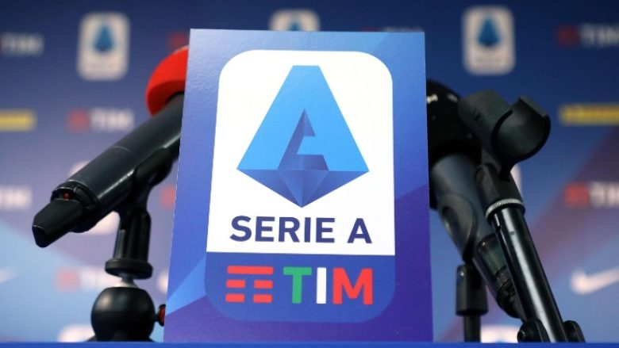

Futbolli në Itali i suspenduar deri më 14 qershor
Federata e Futbollit të Italisë ka njoftuar se futbolli në Itali do të jetë i suspenduar deri më 14 qershor, përfshirë këtu edhe Serie A-n. Stërvitjet e klubeve në baza grupore kanë filluar sot (18 maj), derisa ato individuale kishin filluar më 4 maj. Por, në Serie A kishin shpresuar që të rifillojnë të luajnë futboll më 13 qershor, e që një gjë e tillë nuk është e mundur. Sidoqoftë, federata italiane ka bërë të ditur sonte se sipas vendimit të Kryeministrit Giuseppe Conte, të gjitha evenimentet sportive do të qëndrojnë të suspenduar deri në atë datë. Kjo nënkupton se Serie A nuk do të mund të rikthehet më herët se 15 qershori.